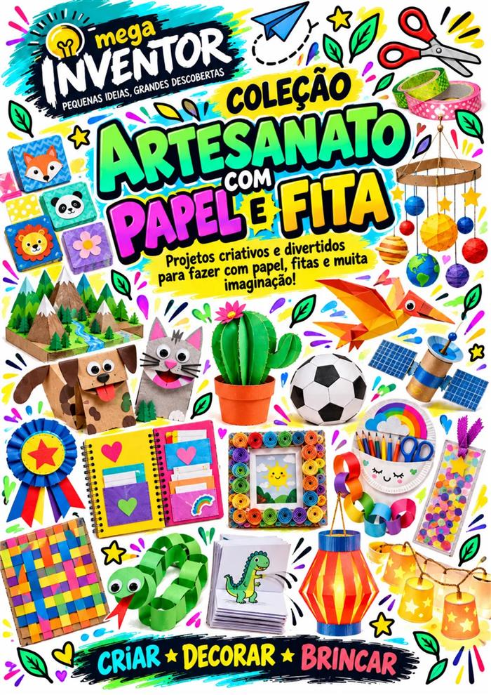
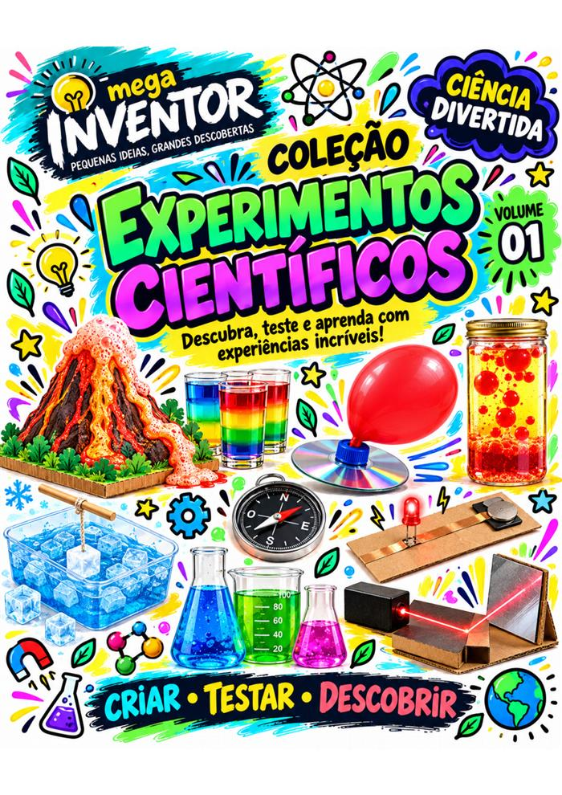
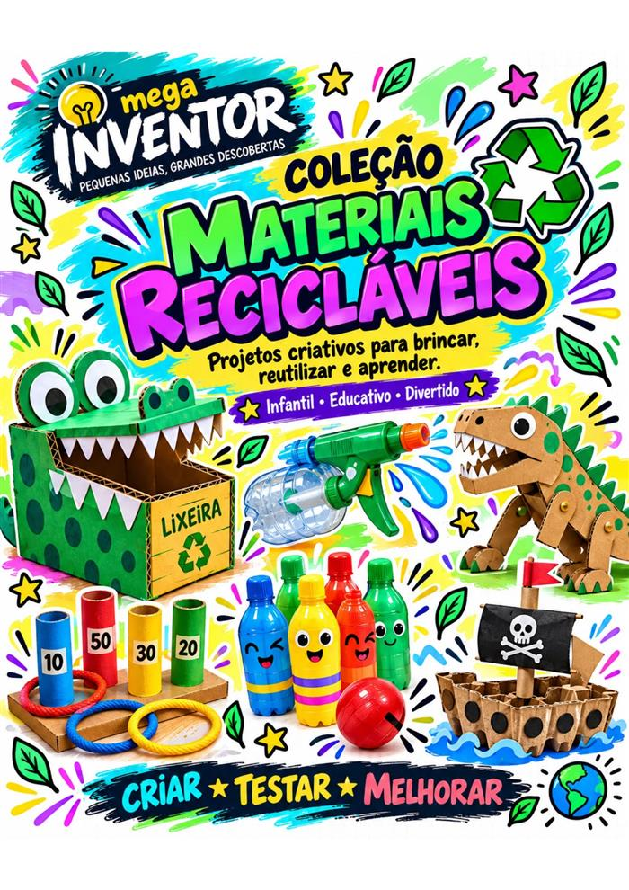
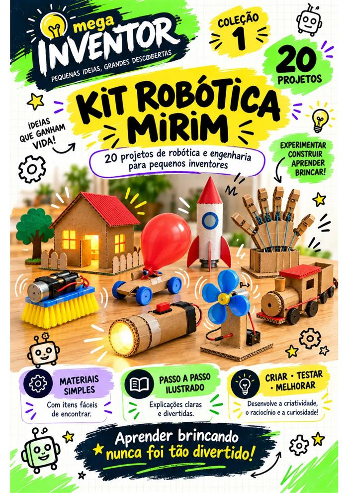

✦ Mega Inventor | Menos telas, mais criatividade
Troque horas de tela por 95 projetos que fazem seu filho criar, pensar, experimentar e se divertir.



Robótica, ciência, reciclagem e artesanato em atividades práticas, ilustradas e feitas com materiais simples para transformar o tempo livre em aprendizado, criatividade e diversão.
QUERO OS 95 PROJETOS POR R$ 29,90 →♥★✦ Feito para famílias que querem mais criatividade e menos dependência das telas.
A rotina que você conhece
Você sente que precisa disputar a atenção do seu filho com o celular todos os dias?
Você pede para desligar o tablet, guardar o celular ou sair do videogame. Poucos minutos depois, vem a pergunta: “O que eu vou fazer agora?”
Muito tempo de tela
Os estímulos rápidos fazem outras atividades parecerem menos interessantes.
Brinquedos que enjoam
Você investe em novidades caras que, em pouco tempo, ficam esquecidas.
Faltam ideias
Mesmo querendo fazer diferente, é difícil pensar em atividades para toda semana.
A rotina é corrida
Projetos complicados e materiais difíceis não cabem no dia a dia de uma família.
Mas afastar seu filho das telas não precisa virar uma batalha. Quando ele cria algo com as próprias mãos, a atenção deixa de ser cobrada e passa a ser conquistada.
Aprendizado mão na massa
95 projetos para aprender brincando e construir de verdade.
O Mega Inventor reúne quatro coleções para incentivar seu filho a recortar, montar, testar, descobrir e se orgulhar do que criou.
🤖
Kit Robótica Mirim
20 projetos de robótica, engenharia e invenção.Estimula raciocínio lógico, curiosidade, criatividade e resolução de problemas.🔬
Experimentos Científicos
45 projetos e experiências científicas.Atividades para observar, testar, descobrir e aprender ciência brincando.✂️
Artesanato com Papel e Fita
20 projetos criativos.Estimula imaginação, coordenação, concentração e criatividade.♻️
Materiais Recicláveis
10 projetos.Transforme caixas, garrafas e tampinhas em brinquedos e invenções.95 projetos • 4 coleções • diversão e aprendizado em um único acesso
✓
95 atividadesNunca mais falte uma ideia divertida em casa.
✓
Passo a passo ilustradoProjetos simples de acompanhar.
✓
Materiais acessíveisItens fáceis de encontrar no dia a dia.
✓
Mais autonomiaEstimula criatividade e raciocínio.
✓
Momento em famíliaCrie memórias especiais juntos.
✓
Menos telasUma alternativa divertida para o tempo livre.
Tudo isso é seu
Você recebe 95 projetos divididos em 4 coleções completas.
Uma biblioteca de atividades para consultar no celular, computador ou imprimir quando quiser.
Quero receber os 95 projetos →01
Kit Robótica Mirim20 projetos de robótica e engenharia
R$ 39,0002
Experimentos Científicos45 projetos
R$ 29,0003
Artesanato com Papel e Fita20 projetos
R$ 18,0004
Materiais Recicláveis10 projetos
R$ 22,00Total95 projetos
Valor das coleções separadamenteR$ 108,00
Ideias para o dia a dia
95 ideias para quando seu filho disser: “Mãe, tô entediado!”
Em vez de procurar uma atividade nova toda vez, você terá uma biblioteca completa com 95 projetos para escolher.
Robô EscovaCarrinho Movido a BalãoCasa com CircuitoMini VentiladorVulcão EfervescenteArco-Íris de DensidadeDinossauro de PapelãoLixeira JacaréJogo de ArgolasArtesanatos com papelProjetos criativos com fitaInvenções recicláveis
Oferta especial de lançamento
Leve 95 projetos completos pagando menos que muitos brinquedos novos.
São 4 coleções digitais completas com projetos de robótica, ciência, reciclagem e artesanato para seu filho aprender enquanto coloca a mão na massa.
R$29,90
Pagamento único. Sem mensalidades.
SIM! QUERO OS 95 PROJETOS POR R$ 29,90 →7DIAS DE
GARANTIA
GARANTIA
Risco zero para você
Experimente o Mega Inventor por 7 dias.
Conheça as coleções com tranquilidade. Se, dentro de 7 dias após a compra, o material não fizer sentido para sua família, basta solicitar o cancelamento pelos canais de suporte.
Você pode decidir sem medo: ou seu filho ganha novas possibilidades para criar e aprender, ou você solicita seu reembolso dentro do prazo da garantia.Dúvidas frequentes
Tudo o que você precisa saber antes de começar.
Como vou receber o Mega Inventor?+
Após a confirmação do pagamento, as instruções de acesso serão enviadas para o e-mail informado na compra. Você poderá consultar o material pelo celular, tablet ou computador.
O material é físico?+
Não. O Mega Inventor é um produto digital. Você recebe as coleções em formato digital e pode imprimir as páginas que desejar.
Preciso comprar ferramentas caras?+
Não. Os projetos usam materiais simples e acessíveis, como papelão, papel, fita adesiva, garrafas PET, tampinhas e itens comuns de casa.
Para qual idade o Mega Inventor é indicado?+
O material é recomendado principalmente para crianças a partir de 6 anos. Em atividades com recorte, peças pequenas ou ferramentas, a participação de um adulto é indicada.
Preciso entender de robótica ou ciência?+
Não. As atividades foram pensadas para iniciantes e trazem orientações passo a passo, para que qualquer família possa acompanhar.
E se eu não gostar?+
Você tem 7 dias de garantia. Se o material não atender às suas expectativas, poderá solicitar o cancelamento pelos canais de suporte dentro desse prazo.
Quantos projetos eu recebo?+
Você recebe 95 projetos distribuídos em 4 coleções: 20 projetos de Robótica Mirim, 45 Experimentos Científicos, 20 projetos de Artesanato com Papel e Fita e 10 projetos com Materiais Recicláveis.
Por quanto tempo terei acesso?+
Você terá acesso ao material durante o período informado no momento da compra.
Comece hoje
95 projetos para transformar o tempo livre em criatividade, descobertas e diversão.
Seu filho poderá construir robôs, fazer experiências, criar brinquedos recicláveis e desenvolver projetos incríveis com papel, fita e materiais simples.
4 coleções + 95 projetos
De R$ 108,00 por R$ 29,90